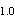

A.CT
B.RT
C.PT
D.ACT
E.APTT
参考答案：C
A.正常新鲜血浆能纠正
B.正常新鲜血浆不能纠正
C.正常血清能纠正，正常人新鲜血浆能纠正
D.正常血清不能纠正，正常吸附血浆能纠正
E.正常血清能纠正，正常吸附血浆不能纠正
参考答案：D
A.FⅧ：C明显减少
B.vWF:Ag明显减少
C.血小板功能异常
D.服阿司匹林使出血加重
E.FⅧ：C明显增高
参考答案：A
A.肝硬化
B.丙型肝炎
C.戊型肝炎
D.自身免疫性慢性活动性肝炎
E.丁型肝炎
A.透明质酸酶
B.B超
C.抗原检查
D.自身抗体检查
E.细胞免疫检查
A.怀疑
B.否定
C.证实
D.有其他合并症
E.提示疾病有了进展
A.肺炎链球菌
B.脑膜炎奈瑟菌
C.流感嗜血杆菌
D.隐球菌
E.单纯疱疹病毒
参考答案：E
A.冷凝集试验
B.脑脊液墨汁染色
C.脑脊液乳胶凝集试验
D.脑脊液培养
E.脑脊液PCR
A.肠球菌
B.肺炎链球菌
C.脑膜炎奈瑟菌
D.无乳链球菌
E.化脓性链球菌
A.0.5麦氏单位菌液；5%羊血的Mueller-Hinton琼脂
B.0.5麦氏单位菌液；Mueller-Hinton琼脂；5%CO
C.0.5麦氏单位菌液；5%羊血的Mueller-Hinton琼脂；5%CO
D.1.0麦氏单位菌液；5%羊血的Mueller-Hinton琼脂；5%CO
E.1.0麦氏单位菌液；Mueller-Hinton琼脂；5%CO
A.阻塞性通气功能障碍
B.限制性通气功能障碍
C.混合性通气功能障碍
D.小气道功能受损
E.大气道功能受损
A.支气管哮喘
B.慢性支气管炎
C.慢性阻塞性肺气肿
D.支气管扩张
E.阻塞性肺炎
A.用力肺活量
B.支气管激发试验
C.最大呼气中段流量
D.残气量
E.肺总量
参考答案：B
A.支气管扩张
B.咳嗽变异性哮喘
C.早期肺气肿
D.嗜酸性肺泡炎
E.肺结核
A.肺活量减少
B.FEV/FVC%降低
C.MMF降低
D.气速指数>1.0
E.通气改善率为25%
A.PEF
B.支气管舒张试验
C.MMF
D.用力肺活量
E.功能残气量
A.肺栓塞
B.风湿性心脏病
C.高血压心脏病
D.肺源性心脏病
E.冠状动脉硬化性心脏病
A.代谢性酸中毒（代酸）
B.呼吸性酸中毒（呼酸）
C.代谢性碱中毒（代碱）
D.呼吸性碱中毒（呼碱）
E.代酸+代碱
A.Ⅱ型呼衰+呼碱
B.Ⅱ型呼衰+呼酸
C.Ⅰ型呼衰+呼酸
D.Ⅰ型呼衰+呼碱
E.Ⅰ型呼衰+代酸
A.尿普通细菌培养
B.尿细胞学检查
C.膀胱B超
D.逆行尿路造影
E.尿沉渣找结核杆菌
A.肾脏B超
B.静脉尿路造影
C.腹部平片检查
D.CT
E.MRI
A.急性肾盂肾炎
B.急性膀胱炎
C.肾结核
D.急性肾盂肾炎并乳头坏死
E.急性肾盂肾炎并肾周脓肿
A.积极对症治疗
B.服碱性药，减轻尿路刺激症状
C.用抗真菌药
D.联合应用抗生素，作局部处理
E.抗结核治疗
A.切开
B.诊断性穿刺
C.腹部B超
D.CT检查
E.钡剂灌肠
A.金黄色葡萄球菌（金葡菌）
B.链球菌
C.大肠埃希菌
D.铜绿假单胞菌
E.粪杆菌
A.青霉素
B.庆大霉素
C.红霉素
D.链霉素
E.甲硝唑
A.支原体肺炎
B.克雷伯杆菌肺炎
C.金葡菌肺炎
D.肺炎链球菌肺炎
E.铜绿假单胞菌肺炎
A.胸片
B.肺部CT
C.痰培养
D.血沉
E.胸部B超
A.尿量增多
B.体温不降
C.咳嗽加剧
D.血压下降，脉压减小
E.胸痛
A.加大抗生素用量
B.使用激素
D.用血管活性药物
A.再生障碍性贫血
B.急性白血病
C.过敏性紫癜
D.血友病
E.血小板减少性紫癜
A.骨髓穿刺检查
B.血常规检查
C.血小板抗体检查
D.凝血因子检查
E.维生素K测定
A.输血小板悬液
B.输注凝血因子
C.应用免疫抑制剂
D.应用免疫球蛋白
E.大剂量维生素C
A.骨髓检查
B.血常规
D.腹部B超
E.肝功检查
A.凝血因子测定
B.血小板功能检测
C.骨髓检查
D.拍胸片
E.血液生化检查
A.全身感染
B.风湿性关节炎
C.慢性肝炎
D.血液系统疾病
E.脑膜炎
A.心脏疾病
B.肝脏疾病
C.肾脏疾病
D.特发性水肿
E.老年性水肿
A.原发性高血压肾损害
B.慢性肾盂肾炎
C.慢性肾小球肾炎
D.肾结核
E.肾肿瘤
A.心源性水肿
B.肝源性水肿
C.营养不良性水肿
D.局部性水肿
E.血管神经性水肿
A.肺源性心脏病
B.风心病
C.更年期综合征
D.心包积液
E.慢性肾炎
B.心电图
C.心脏超声
D.尿常规
E.肾功能
A.右心功能衰竭
B.并发肾功能损害
C.心包积液
D.合并营养不良
E.血浆胶体渗透压过低
A.结核性腹膜炎
B.原发性肝癌
C.肝肾综合征
D.肝硬化
E.腹膜转移癌
A.漏出液
B.脓性
C.淋巴液
D.渗出液
E.低蛋白液
A.抗感染治疗
B.抗结核治疗
C.开腹探查
D.放腹水
E.腹水浓缩回输
A.淋巴液增多
B.肾脏损害
C.门脉高压合并腹水感染
D.营养不良
E.组织液回流障碍
A.风湿性心瓣膜病
B.溶血性贫血
C.心肌炎
D.继发性贫血
E.海洋性贫血
A.营养不良
B.消化道出血
C.继发于心脏病
D.溶血
E.骨髓造血功能障碍
A.心肌炎
B.心瓣膜病
C.贫血
D.感染因素
E.风湿热
A.心肌梗死
B.心肌病
C.气胸
E.心房纤颤
A.心电图
B.心脏常规拍片
C.心肌酶谱
D.胸片
E.超声
B.病毒性心肌炎
D.心包炎
E.心力衰竭
A.使用扩血管药物
B.紧急心包穿刺
C.紧急胸穿
D.β-受体阻滞剂
E.强心剂
A.无黄疸
B.隐性黄疸
C.轻度黄疸
D.中度黄疸
E.重度黄疸
A.血清总胆红素和非结合胆红素升高
B.血清总胆红素和结合胆红素升高
C.血清总胆红素和结合胆红素及非结合胆红素升高
D.结合胆红素／总胆红素比值<20%
E.结合胆红素／总胆红素比值明显下降
A.胆红素阴性，尿胆原正常
B.胆红素阴性，尿胆原明显升高
C.胆红素强阳性，尿胆原减少
D.胆红素阳性，尿胆原中度升高
E.胆红素阴性，尿胆原减少
A.内脏性疼痛
B.躯体性疼痛
C.牵涉痛
D.既有躯体性疼痛又有内脏性疼痛
E.既有躯体性疼痛又有牵涉痛
A.疼痛持续时间
B.疼痛有无放射
C.疼痛诊治经过
D.疼痛性质
E.疼痛加重因素
A.慢性腹泻，为肠道内感染
B.慢性腹泻，为全身性感染
C.急性腹泻，为急性中毒
D.急性腹泻，为肠道内感染
E.急性腹泻，为全身性感染
A.分泌性腹泻
B.渗透性腹泻
C.渗出性腹泻
D.动力性腹泻
E.吸收不良性腹泻
A.贲门失弛缓症
B.反流性食管炎
C.食管裂孔疝
D.食管癌
E.食管平滑肌瘤
A.机械性吞咽困难
B.运动性吞咽困难
C.口咽性吞咽困难
D.机械性与运动性两者均有
E.精神性吞咽困难
A.胸部CT
B.X线上消化道造影
C.胃镜检查并活检
D.磁共振成像
E.血管造影检查
A.肾小球疾病引起
B.肾小球疾病合并尿路感染
C.与长期使用泼尼松有关
D.与使用环磷酰胺有关
E.肺部感染波及尿路
A.肾实质性病变加重
B.环磷酰胺引起肾损害
C.头孢唑林产生肾损害
D.尿路感染引起
E.与泼尼松使用有关
A.心衰引起
B.肾实质损害加重
C.与血压升高有关
D.与血透时肝素用量过大有关
E.与使用环磷酰胺有关
A.轻度到中度尿失禁之间
B.中度尿失禁
C.重度尿失禁
D.轻度尿失禁
E.中度到重度尿失禁之间
A.尿路感染
B.急性精神错乱
C.膀胱膨出
D.药物反应
E.心理性忧郁症
A.膀胱平滑肌受损
B.膀胱括约肌受损
C.药物副作用
D.前列腺肥大
E.前列腺癌
A.膀胱括约肌受损
B.药物副作用
C.前列腺肥大
D.前列腺癌
E.膀胱平滑肌受损
A.腹部CT
B.腹部B超
C.叩诊膀胱是否增大
D.磁共振
E.排泄性尿路造影
A.单纯性肥胖
B.库欣综合征
C.下丘脑性肥胖
D.甲状腺功能减退症
E.间脑性肥胖
A.肥胖
B.超重
C.2级肥胖
D.体重正常
E.3级肥胖
A.禁烟、限酒
B.低盐低脂饮食
C.适量运动，减轻体重
D.降脂治疗
E.以上选项均正确
A.睡眠中打鼾是日常生活中较为常见的现象，无须特殊治疗
B.中年男性，血脂偏高，应定期复查
C.患者长期吸烟、饮酒，血脂高，肥胖，应尽快控制体重
D.病情严重者可行激光辅助的腭垂咽成形术
E.睡眠时应采取侧卧位姿势
A.体质性消瘦
B.消化系统疾病
C.内分泌疾病
D.感染性疾病
E.神经精神疾病
A.头部CT
B.胃肠镜
C.血常规
D.血浆中相关激素水平测定
E.妇科彩超
A.垂体瘤
B.肾上腺皮质功能减退症
C.甲状腺功能亢进症
D.Frohlich综合征
E.希恩综合征
A.三叉神经痛
B.偏头痛
C.脑肿瘤
D.肌紧张性头痛
E.青光眼
A.头痛反复发作
B.有一个或一个以上的先兆症状
C.体检无器质性疾病的证据
D.脑膜刺激征(+)
E.麦角胺治疗有效
A.双侧瞳孔扩大
B.呼吸性碱中毒
C.意识丧失
D.手足麻木
E.颜面苍白
A.癫痫大发作
B.晕厥
C.癔症
D.癫痫小发作
E.短暂性脑缺血发作
A.首选静注地西泮
B.暗示治疗
C.口服苯妥英钠
D.口服丙戊酸钠
E.应用麦角胺
A.家族史
B.外伤史及是否有食痘肉史
C.有无先心病病史
D.有无青光眼病史
E.有无贫血病史
A.头颅CT
B.脑电图
C.心电图
D.MRI
E.脑脊液检查
A.低钙抽搐
B.癫痫大发作
D.低血糖状态
E.癫痫小发作
A.抽搐发作时伴舌咬伤
B.抽搐发作时脑电图见棘波
C.癫痫发作时间歇期脑电图
D.病理反射阳性
E.抽搐发作时双侧瞳孔缩小
A.脑膜炎
B.脑肿瘤
C.脑囊虫病
D.蛛网膜下腔出血
E.脑炎
B.胸片
C.超声心动图
D.运动负荷试验
E.冠脉造影
A.肝病面容
B.满月面容
C.贫血病容
D.二尖瓣面容
E.肾病面容
A.脑梗死
B.动脉硬化闭塞症
C.腰椎间盘突出
D.类风湿关节炎
E.震颤麻痹
A.慌张步态
B.共济失调步态
C.跨阈步态
D.蹒跚步态
E.间歇性跛行
A.急性面容
B.慢性面容
C.贫血面容
E.肝病面容
A.头部
B.颈动脉搏动
C.生命体征
D.心脏
E.肺部
A.瞳孔
B.心脏及肺部
C.腹部
D.神经系统
E.四肢
A.肺癌
B.细菌性肺炎
C.肺结核
D.支原体肺炎
E.病毒性肺炎
A.右颏下淋巴结群
B.左颈前淋巴结群
C.右颈后淋巴结群
D.左锁骨上窝淋巴结群
E.右锁骨上窝淋巴结群
A.稍硬、见瘘管
B.柔软、压痛、表面光滑
C.大小不等，表面有波动
D.稍硬、大小不等，相互粘连
E.橡皮样感、无压痛、不易推动
A.耳后淋巴结
B.颈部淋巴结
C.枕部淋巴结
D.颏下淋巴结
E.颌下淋巴结
A.坚硬、无压痛、表面突出
B.稍硬、无压痛、表面光滑
C.稍硬、大小不等、相互粘连
D.橡皮样感、压痛、易推动
微信关注